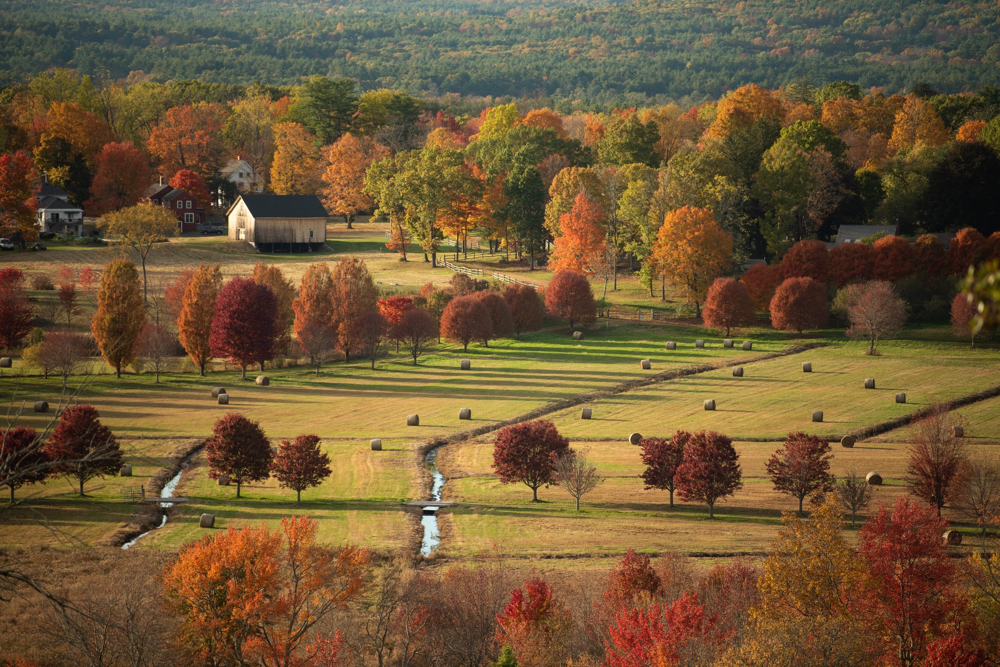

My name is Hailang Jiang [ˈhaɪ.lɑŋ d͡ʒɑŋ][1] (Mandarin: 江 海浪 [t͡ɕʲɑ́ŋ xài.lɑ̂ŋ]). Hailang means ‘sea wave.’
I am a phonologist, and for now I live in Cambridge, MA. I like how the trees mark the changing seasons here. When I’m not doing phonology, I enjoy photography (cityscapes, nature, and portraits), hiking, woodcarving, reading, and writing.
Before this, I lived in England for two years, a time I remember with hiraeth. Before that, I studied economics in China though I developed a passion for linguistics that eventually outweighed my interest in microeconomics and game theory. Before all that, I grew up in Chongqing, a hilly, sweaty (in summer) and cloudy (otherwise) city in southern China.
